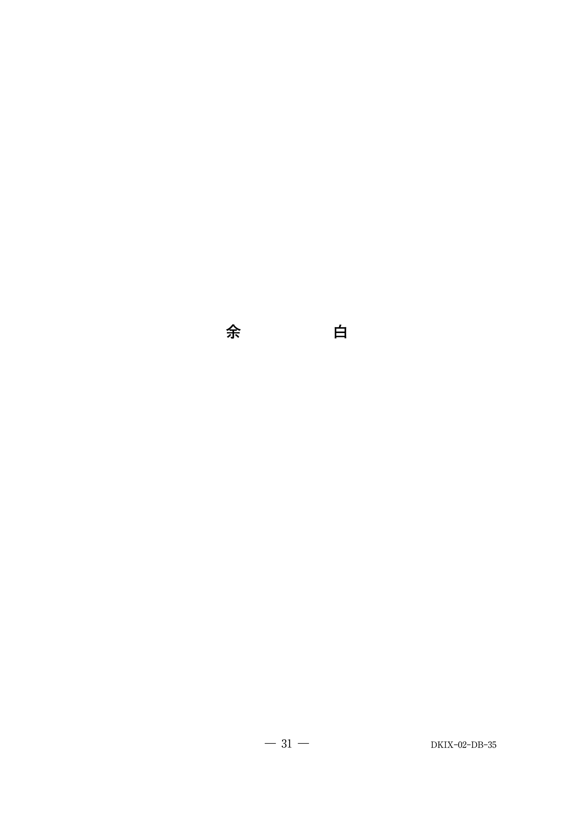

歯の着色は発生部位により外因性着色と内因性着色に分類される。
ペリクルの厚い箇所や清掃不良箇所に好発する。
| 原因 | 色調 | 特徴 |
|---|---|---|
| 飲食物 | 茶褐色 | コーヒー、茶、カレーなど |
| タバコ | 黒〜黒褐色 | タール成分、舌側に好発 |
| 洗口剤 | 茶褐色 | クロルヘキシジンの長期使用 |
| 色素産生細菌 | 緑色、黒色、オレンジ色 | 口腔清掃不良の小児に多い |
| 金属 | 色調 |
|---|---|
| 銅、ニッケル | 緑色 |
| 鉄、マンガン | 黒色 |
歯の形成時期に起こり、歯の構造に影響を及ぼすことで変色する。
| 原因 | 色調 | 特徴 |
|---|---|---|
| 代謝異常 | 茶色、赤茶色 | チロシン・フェニルアラニン代謝異常、ポルフィリン代謝異常 |
| エナメル質形成不全 | 白斑〜褐色 | 「雪帽子」状など程度は多様 |
| 象牙質形成不全 | 半透明〜茶色 | 遺伝的・環境的要因 |
| テトラサイクリン | 黄色〜茶褐色、紫色 | 光により色調が濃くなる |
| 歯のフッ素症 | 灰白色〜茶〜黒色 | フッ化物の過剰摂取 |
| 歯髄壊死 | 淡黄色〜黒色 | 出血・壊死による分解産物の浸透 |
国試で最も問われるポイント。外因性着色の一種。
13歳の男子。歯面の着色を主訴として来院した。約1か月前から気になり始め、着色の範囲に大きな変化はないという。初診時の口腔内写真（別冊No.35）を別に示す。
原因として考えられるのはどれか。1つ選べ。

【解説】写真では上顎前歯の唇側歯頸部に緑色の着色が認められる。これは色素産生細菌による外因性着色（緑色着色：green stain）である。約1か月で範囲に変化がないことから、歯の形成時期に生じる内因性着色（c〜e）は否定的。緑茶による着色は茶褐色であり、この緑色の所見とは合致しない。